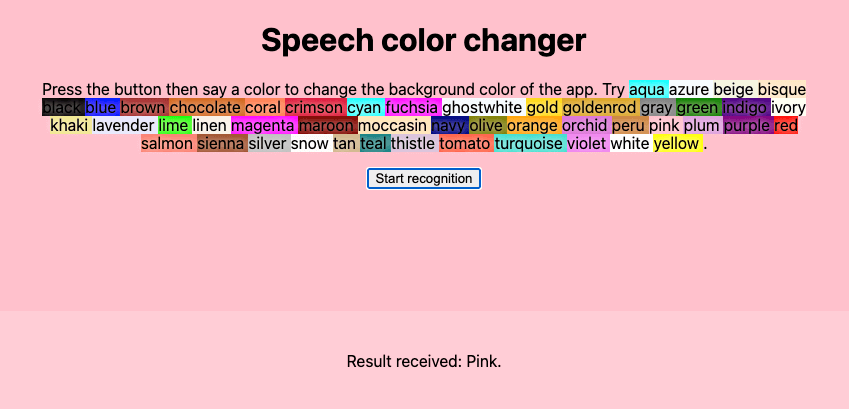
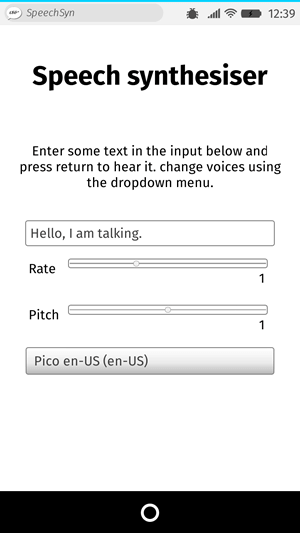

The Web Speech API provides two distinct areas of functionality — speech recognition, and speech synthesis (also known as text to speech, or tts) — which open up interesting new possibilities for accessibility, and control mechanisms. This article provides a simple introduction to both areas, along with demos.
Speech recognition involves receiving speech through a device's microphone, which is then checked by a speech recognition service against a list of grammar (basically, the vocabulary you want to have recognized in a particular app.) When a word or phrase is successfully recognized, it is returned as a result (or list of results) as a text string, and further actions can be initiated as a result.
The Web Speech API has a main controller interface for this — {{domxref("SpeechRecognition")}} — plus a number of closely-related interfaces for representing grammar, results, etc. Generally, the default speech recognition system available on the device will be used for the speech recognition — most modern OSes have a speech recognition system for issuing voice commands. Think about Dictation on macOS, Siri on iOS, Cortana on Windows 10, Android Speech, etc.
Note: On some browsers, like Chrome, using Speech Recognition on a web page involves a server-based recognition engine. Your audio is sent to a web service for recognition processing, so it won't work offline.
To show simple usage of Web speech recognition, we've written a demo called Speech color changer. When the screen is tapped/clicked, you can say an HTML color keyword, and the app's background color will change to that color.

To run the demo, you can clone (or directly download) the Github repo it is part of, open the HTML index file in a supporting desktop browser, or navigate to the live demo URL in a supporting mobile browser like Chrome.
Support for Web Speech API speech recognition is currently limited to Chrome for Desktop and Android — Chrome has supported it since around version 33 but with prefixed interfaces, so you need to include prefixed versions of them, e.g. webkitSpeechRecognition.
The HTML and CSS for the app is really trivial. We have a title, instructions paragraph, and a div into which we output diagnostic messages.
<h1>Speech color changer</h1> <p>Tap/click then say a color to change the background color of the app.</p> <div> <p class="output"><em>...diagnostic messages</em></p> </div>
The CSS provides a very simple responsive styling so that it looks ok across devices.
Let's look at the JavaScript in a bit more detail.
As mentioned earlier, Chrome currently supports speech recognition with prefixed properties, therefore at the start of our code we include these lines to feed the right objects to Chrome, and any future implementations that might support the features without a prefix:
var SpeechRecognition = SpeechRecognition || webkitSpeechRecognition var SpeechGrammarList = SpeechGrammarList || webkitSpeechGrammarList var SpeechRecognitionEvent = SpeechRecognitionEvent || webkitSpeechRecognitionEvent
The next part of our code defines the grammar we want our app to recognize. The following variable is defined to hold our grammar:
var colors = [ 'aqua' , 'azure' , 'beige', 'bisque', 'black', 'blue', 'brown', 'chocolate', 'coral' ... ];
var grammar = '#JSGF V1.0; grammar colors; public <color> = ' + colors.join(' | ') + ' ;'
The grammar format used is JSpeech Grammar Format (JSGF) — you can find a lot more about it at the previous link to its spec. However, for now let's just run through it quickly:
#JSGF V1.0; — states the format and version used. This always needs to be included first.public declares that it is a public rule, the string in angle brackets defines the recognized name for this term (color), and the list of items that follow the equals sign are the alternative values that will be recognized and accepted as appropriate values for the term. Note how each is separated by a pipe character.The next thing to do is define a speech recogntion instance to control the recognition for our application. This is done using the {{domxref("SpeechRecognition.SpeechRecognition()","SpeechRecognition()")}} constructor. We also create a new speech grammar list to contain our grammar, using the {{domxref("SpeechGrammarList.SpeechGrammarList()","SpeechGrammarList()")}} constructor.
var recognition = new SpeechRecognition(); var speechRecognitionList = new SpeechGrammarList();
We add our grammar to the list using the {{domxref("SpeechGrammarList.addFromString()")}} method. This accepts as parameters the string we want to add, plus optionally a weight value that specifies the importance of this grammar in relation of other grammars available in the list (can be from 0 to 1 inclusive.) The added grammar is available in the list as a {{domxref("SpeechGrammar")}} object instance.
speechRecognitionList.addFromString(grammar, 1);
We then add the {{domxref("SpeechGrammarList")}} to the speech recognition instance by setting it to the value of the {{domxref("SpeechRecognition.grammars")}} property. We also set a few other properties of the recognition instance before we move on:
true), or just a single result each time recognition is started (false).recognition.grammars = speechRecognitionList; recognition.continuous = false; recognition.lang = 'en-US'; recognition.interimResults = false; recognition.maxAlternatives = 1;
After grabbing references to the output {{htmlelement("div")}} and the HTML element (so we can output diagnostic messages and update the app background color later on), we implement an onclick handler so that when the screen is tapped/clicked, the speech recognition service will start. This is achieved by calling {{domxref("SpeechRecognition.start()")}}. The forEach() method is used to output colored indicators showing what colors to try saying.
var diagnostic = document.querySelector('.output');
var bg = document.querySelector('html');
var hints = document.querySelector('.hints');
var colorHTML= '';
colors.forEach(function(v, i, a){
console.log(v, i);
colorHTML += '<span style="background-color:' + v + ';"> ' + v + ' </span>';
});
hints.innerHTML = 'Tap/click then say a color to change the background color of the app. Try ' + colorHTML + '.';
document.body.onclick = function() {
recognition.start();
console.log('Ready to receive a color command.');
}
Once the speech recognition is started, there are many event handlers that can be used to retrieve results, and other pieces of surrounding information (see the SpeechRecognition event handlers list.) The most common one you'll probably use is {{domxref("SpeechRecognition.onresult")}}, which is fired once a successful result is received:
recognition.onresult = function(event) {
var color = event.results[0][0].transcript;
diagnostic.textContent = 'Result received: ' + color + '.';
bg.style.backgroundColor = color;
console.log('Confidence: ' + event.results[0][0].confidence);
}
The second line here is a bit complex-looking, so let's explain it step by step. The {{domxref("SpeechRecognitionEvent.results")}} property returns a {{domxref("SpeechRecognitionResultList")}} object containing {{domxref("SpeechRecognitionResult")}} objects. It has a getter so it can be accessed like an array — so the first [0] returns the SpeechRecognitionResult at position 0. Each SpeechRecognitionResult object contains {{domxref("SpeechRecognitionAlternative")}} objects that contain individual recognized words. These also have getters so they can be accessed like arrays — the second [0] therefore returns the SpeechRecognitionAlternative at position 0. We then return its transcript property to get a string containing the individual recognized result as a string, set the background color to that color, and report the color recognized as a diagnostic message in the UI.
We also use a {{domxref("SpeechRecognition.onspeechend")}} handler to stop the speech recognition service from running (using {{domxref("SpeechRecognition.stop()")}}) once a single word has been recognized and it has finished being spoken:
recognition.onspeechend = function() {
recognition.stop();
}
The last two handlers are there to handle cases where speech was recognized that wasn't in the defined grammar, or an error occurred. {{domxref("SpeechRecognition.onnomatch")}} seems to be supposed to handle the first case mentioned, although note that at the moment it doesn't seem to fire correctly; it just returns whatever was recognized anyway:
recognition.onnomatch = function(event) {
diagnostic.textContent = 'I didnt recognize that color.';
}
{{domxref("SpeechRecognition.onerror")}} handles cases where there is an actual error with the recognition successfully — the {{domxref("SpeechRecognitionError.error")}} property contains the actual error returned:
recognition.onerror = function(event) {
diagnostic.textContent = 'Error occurred in recognition: ' + event.error;
}
Speech synthesis (aka text-to-speech, or tts) involves receiving synthesising text contained within an app to speech, and playing it out of a device's speaker or audio output connection.
The Web Speech API has a main controller interface for this — {{domxref("SpeechSynthesis")}} — plus a number of closely-related interfaces for representing text to be synthesised (known as utterances), voices to be used for the utterance, etc. Again, most OSes have some kind of speech synthesis system, which will be used by the API for this task as available.
To show simple usage of Web speech synthesis, we've provided a demo called Speak easy synthesis. This includes a set of form controls for entering text to be synthesised, and setting the pitch, rate, and voice to use when the text is uttered. After you have entered your text, you can press Enter/Return to hear it spoken.

To run the demo, you can clone (or directly download) the Github repo it is part of, open the HTML index file in a supporting desktop browser, or navigate to the live demo URL in a supporting mobile browser like Chrome, or Firefox OS.
Support for Web Speech API speech synthesis is still getting there across mainstream browsers, and is currently limited to the following:
Firefox desktop and mobile support it in Gecko 42+ (Windows)/44+, without prefixes, and it can be turned on by flipping the media.webspeech.synth.enabled flag to true in about:config.
Firefox OS 2.5+ supports it, by default, and without the need for any permissions.
Chrome for Desktop and Android have supported it since around version 33, without prefixes.
The HTML and CSS are again pretty trivial, containing a title, some instructions for use, and a form with some simple controls. The {{htmlelement("select")}} element is initially empty, but is populated with {{htmlelement("option")}}s via JavaScript (see later on.)
<h1>Speech synthesiser</h1>
<p>Enter some text in the input below and press return to hear it. change voices using the dropdown menu.</p>
<form>
<input type="text" class="txt">
<div>
<label for="rate">Rate</label><input type="range" min="0.5" max="2" value="1" step="0.1" id="rate">
<div class="rate-value">1</div>
<div class="clearfix"></div>
</div>
<div>
<label for="pitch">Pitch</label><input type="range" min="0" max="2" value="1" step="0.1" id="pitch">
<div class="pitch-value">1</div>
<div class="clearfix"></div>
</div>
<select>
</select>
</form>
Let's investigate the JavaScript that powers this app.
First of all, we capture references to all the DOM elements involved in the UI, but more interestingly, we capture a reference to {{domxref("Window.speechSynthesis")}}. This is API's entry point — it returns an instance of {{domxref("SpeechSynthesis")}}, the controller interface for web speech synthesis.
var synth = window.speechSynthesis;
var inputForm = document.querySelector('form');
var inputTxt = document.querySelector('.txt');
var voiceSelect = document.querySelector('select');
var pitch = document.querySelector('#pitch');
var pitchValue = document.querySelector('.pitch-value');
var rate = document.querySelector('#rate');
var rateValue = document.querySelector('.rate-value');
var voices = [];
To populate the {{htmlelement("select")}} element with the different voice options the device has available, we've written a populateVoiceList() function. We first invoke {{domxref("SpeechSynthesis.getVoices()")}}, which returns a list of all the available voices, represented by {{domxref("SpeechSynthesisVoice")}} objects. We then loop through this list — for each voice we create an {{htmlelement("option")}} element, set its text content to display the name of the voice (grabbed from {{domxref("SpeechSynthesisVoice.name")}}), the language of the voice (grabbed from {{domxref("SpeechSynthesisVoice.lang")}}), and -- DEFAULT if the voice is the default voice for the synthesis engine (checked by seeing if {{domxref("SpeechSynthesisVoice.default")}} returns true.)
We also create data- attributes for each option, containing the name and language of the associated voice, so we can grab them easily later on, and then append the options as children of the select.
function populateVoiceList() {
voices = synth.getVoices();
for(i = 0; i < voices.length ; i++) {
var option = document.createElement('option');
option.textContent = voices[i].name + ' (' + voices[i].lang + ')';
if(voices[i].default) {
option.textContent += ' -- DEFAULT';
}
option.setAttribute('data-lang', voices[i].lang);
option.setAttribute('data-name', voices[i].name);
voiceSelect.appendChild(option);
}
}
When we come to run the function, we do the following. This is because Firefox doesn't support {{domxref("SpeechSynthesis.onvoiceschanged")}}, and will just return a list of voices when {{domxref("SpeechSynthesis.getVoices()")}} is fired. With Chrome however, you have to wait for the event to fire before populating the list, hence the if statement seen below.
populateVoiceList();
if (speechSynthesis.onvoiceschanged !== undefined) {
speechSynthesis.onvoiceschanged = populateVoiceList;
}
Next, we create an event handler to start speaking the text entered into the text field. We are using an onsubmit handler on the form so that the action happens when Enter/Return is pressed. We first create a new {{domxref("SpeechSynthesisUtterance.SpeechSynthesisUtterance()", "SpeechSynthesisUtterance()")}} instance using its constructor — this is passed the text input's value as a parameter.
Next, we need to figure out which voice to use. We use the {{domxref("HTMLSelectElement")}} selectedOptions property to return the currently selected {{htmlelement("option")}} element. We then use this element's data-name attribute, finding the {{domxref("SpeechSynthesisVoice")}} object whose name matches this attribute's value. We set the matching voice object to be the value of the {{domxref("SpeechSynthesisUtterance.voice")}} property.
Finally, we set the {{domxref("SpeechSynthesisUtterance.pitch")}} and {{domxref("SpeechSynthesisUtterance.rate")}} to the values of the relevant range form elements. Then, with all necessary preparations made, we start the utterance being spoken by invoking {{domxref("SpeechSynthesis.speak()")}}, passing it the {{domxref("SpeechSynthesisUtterance")}} instance as a parameter.
inputForm.onsubmit = function(event) {
event.preventDefault();
var utterThis = new SpeechSynthesisUtterance(inputTxt.value);
var selectedOption = voiceSelect.selectedOptions[0].getAttribute('data-name');
for(i = 0; i < voices.length ; i++) {
if(voices[i].name === selectedOption) {
utterThis.voice = voices[i];
}
}
utterThis.pitch = pitch.value;
utterThis.rate = rate.value;
synth.speak(utterThis);
In the final part of the handler, we include an {{domxref("SpeechSynthesisUtterance.onpause")}} handler to demonstrate how {{domxref("SpeechSynthesisEvent")}} can be put to good use. When {{domxref("SpeechSynthesis.pause()")}} is invoked, this returns a message reporting the character number and name that the speech was paused at.
utterThis.onpause = function(event) {
var char = event.utterance.text.charAt(event.charIndex);
console.log('Speech paused at character ' + event.charIndex + ' of "' +
event.utterance.text + '", which is "' + char + '".');
}
Finally, we call blur() on the text input. This is mainly to hide the keyboard on Firefox OS.
inputTxt.blur(); }
The last part of the code updates the pitch/rate values displayed in the UI, each time the slider positions are moved.
pitch.onchange = function() {
pitchValue.textContent = pitch.value;
}
rate.onchange = function() {
rateValue.textContent = rate.value;
}